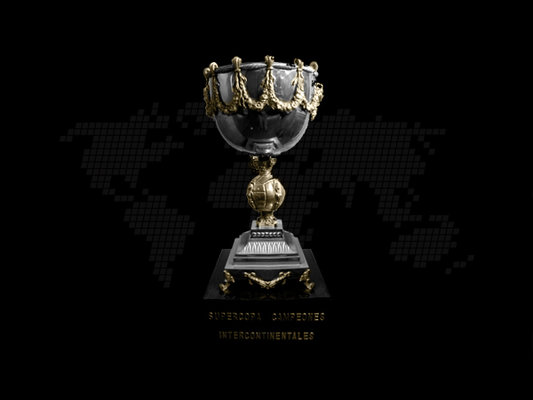

1 Copa Toyota
3 Copas Internacional
5 Copas Libertadores
1 Copa Costa de sol
1 Supercopa
2 Copas Teresa Herrera
1 Copa Campeon del siglo
Competiciones Internacionales reconocidas por CONMEBOl y FIFA
Títulos locales
53 Campeonatos Uruguayos que incluyen dos quinquenios. Logro único hasta el momento por parte de equipo alguno. Se consiguieron en 1900-1901-1905-1907-1911-1918-1921-1924(FUF)-1926(Conesjo Provisorio)-1928-1929-1932-1935-1936-1937-1938-1944-1945-1949-1951-1953-1954-1958-1959-1960-1961-1962-1964-1965-1967-1968-1973-1974-1975-1978-1979-1981-1982-1985-1986-1993-1994-1995-1996-1997-1999-2003-2009/2010-2012/2013-2015/2016-2017-2018-2021